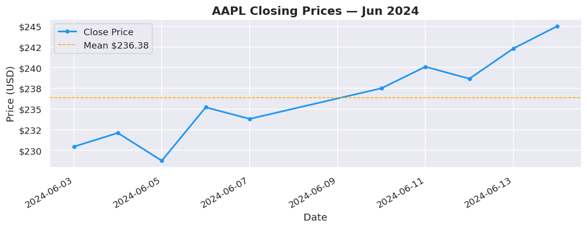
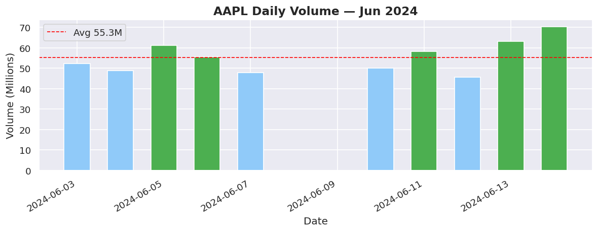
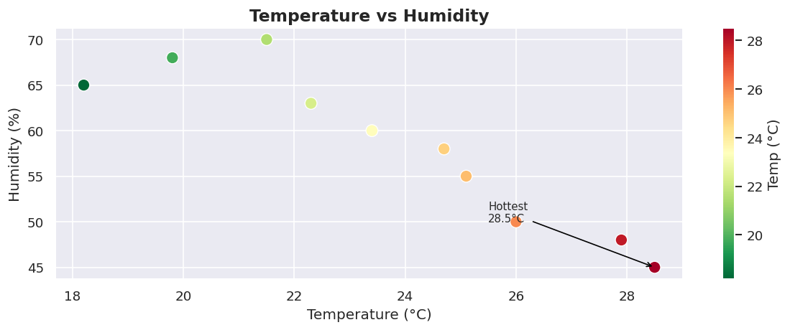
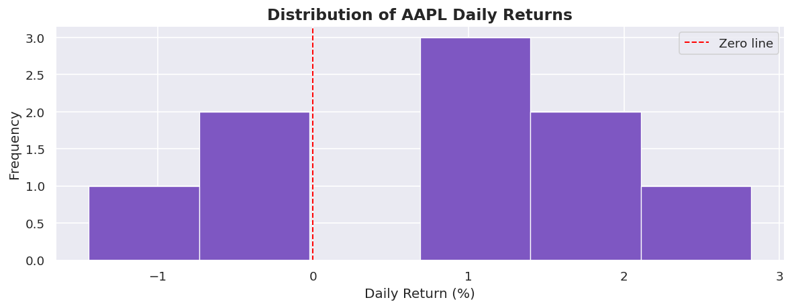
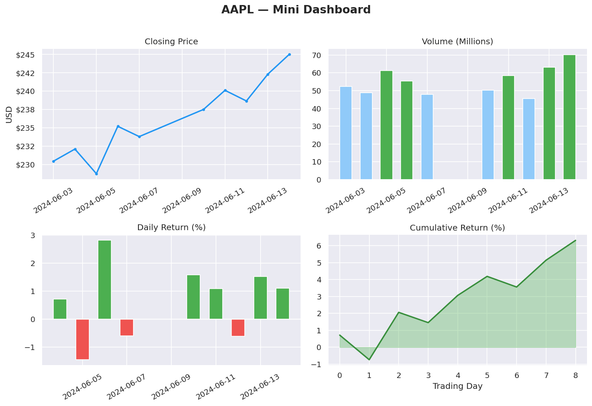
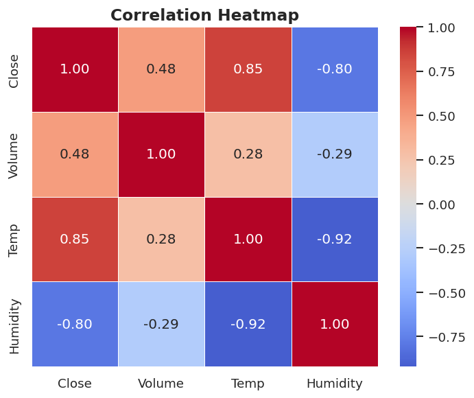

Python Fundamentels
Objective To cover the fundamentals of Python in one Juypter Notebook.
- Variables
- Data types
- Control Flow
- List Comprehension
- Functions
- Decorators
- Error Handling
- File I/O
- OOP Basics
- OOP Finance
- Numpy
- Numpy Finance
- Pandas
- Pandas Finance
- Charts
Variables
# PYTHON VARIABLES
# A variable is a container for storing data values.
# Creating a variable and assigning a value to it
x = 5
y = "Hello, World!"
a, b, c = 1, 2, 3
# Output the values of the variables
print(x) # Output: 5
print(y) # Output: Hello, World!
print(a, b, c) # Output: 1 2 3
# Variable names can contain letters, numbers, and underscores, but they cannot start with a number.
# Variable names are case-sensitive, which means that 'myVariable' and 'myvariable' are considered different variables.
5
Hello, World!
1 2 3
Data Types
# PYTHON DATA TYPES
# Python has several built-in data types.
# Numeric types
x = 42 # int
y = 3.14 # float
z = 2 + 3j # complex (rarely used)
print(x) # Output: 42
print(y) # Output: 3.14
print(z) # Output: (2+3j)
# Sequence types
s = "Hello" # str (immutable)
lst = [1, 2, "three"] # list (mutable)
tup = (1, 2, "three") # tuple (immutable)
print(s) # Output: Hello
print(lst) # Output: [1, 2, 'three']
print(tup) # Output: (1, 2, 'three')
# Mapping type
d = {"name": "Anna", "age": 28} # dict (mutable)
print(d) # Output: {'name': 'Anna', 'age': 28}
print(d["name"])# Output: Anna
# Set types
st = {1, 2, 2, 3} # set (mutable, unique items)
fs = frozenset([1, 2, 3]) # frozenset (immutable)
print(st) # Output: {1, 2, 3}
print(fs) # Output: frozenset({1, 2, 3})
# Boolean and None
flag = True # bool (immutable)
nothing = None # NoneType (immutable)
print(flag) # Output: True
print(nothing) # Output: None
# Check types with type()
print(type(x)) # Output: <class 'int'>
print(type(s)) # Output: <class 'str'>
print(type(lst)) # Output: <class 'list'>
print(type(d)) # Output: <class 'dict'>
print(type(st)) # Output: <class 'set'>
# ==================== MUTABLE vs IMMUTABLE ====================
# Mutable = can be changed AFTER creation (modified in place)
# Examples: list, dict, set
# You change the original object without creating a new one
# Immutable = CANNOT be changed after creation
# Examples: int, float, str, tuple, frozenset, bool, None
# Any "change" creates a completely new object
# The original stays untouched
# Why it matters:
# Mutable objects can surprise you when passed to functions
# Immutable objects are safer and can be used as dict keys
42
3.14
(2+3j)
Hello
[1, 2, 'three']
(1, 2, 'three')
{'name': 'Anna', 'age': 28}
Anna
{1, 2, 3}
frozenset({1, 2, 3})
True
None
<class 'int'>
<class 'str'>
<class 'list'>
<class 'dict'>
<class 'set'>
Control Flow
# PYTHON CONTROL FLOW
# Control flow decides which code runs and when.
# Main tools: if/elif/else, for loops, while loops, and break/continue/pass.
# ==================== CONDITIONAL STATEMENTS ====================
# Use if/elif/else for decisions
score = 85
if score >= 90:
grade = "A"
elif score >= 80: # checked only if previous was False
grade = "B"
elif score >= 70:
grade = "C"
else:
grade = "F"
print("Grade:", grade)
# ==================== FOR LOOPS ====================
# for loop - iterate over sequences (most common)
# Use for when you know how many times (or what to loop over)
# Over a list
for fruit in ["apple", "banana", "cherry"]:
print(fruit)
# Over range (numbers)
for i in range(5): # 0 to 4
print("Count:", i)
# ==================== WHILE LOOPS ====================
# while loop - repeat while a condition is True
# Use while when you don't know in advance (until a condition)
count = 0
while count < 3:
print("While loop:", count)
count += 1
# ==================== CONTROL KEYWORDS ====================
# break - exit the loop immediately
# continue - skip the rest of this iteration
# pass - do nothing (placeholder)
print("\nControl keywords demo:")
for num in range(10):
if num == 3:
continue # skip 3
if num == 7:
break # stop at 7
print(num) # prints 0 1 2 4 5 6
# pass example (useful in empty functions/classes)
if True:
pass # does nothing, but code runs
# ==================== KEY TAKEAWAYS ====================
# • Use for when you know how many times (or what to loop over)
# • Use while when you don't know in advance (until a condition)
# • break/continue only work inside loops
# • Indentation (4 spaces) defines the blocks!
Grade: B
apple
banana
cherry
Count: 0
Count: 1
Count: 2
Count: 3
Count: 4
While loop: 0
While loop: 1
While loop: 2
Control keywords demo:
0
1
2
4
5
6
List Comprehension
# PYTHON LIST COMPREHENSION
# List comprehension = a concise, readable way to build lists in one line.
# Faster than a for loop, more Pythonic, and works beautifully with data.
# Pattern: [expression for item in iterable if condition]
import numpy as np
import pandas as pd
# ── Shared data (carried over from previous cells) ────────────────────────────
close = [230.45, 232.10, 228.75, 235.20, 233.80,
237.50, 240.10, 238.65, 242.30, 245.00]
volume = [52.3, 48.8, 61.2, 55.4, 47.9, 50.1, 58.3, 45.6, 63.1, 70.2]
temps = [18.2, 21.5, 19.8, 23.4, 25.1, 24.7, 22.3, 26.0, 28.5, 27.9]
tickers = ["AAPL", "tsla", "GOOGL", "msft", "AMZN"]
# ==================== 1. THE BASICS ====================
# for loop vs list comprehension — same result, less code
print("── 1. for loop vs comprehension ──")
# Traditional for loop
squared_loop = []
for x in range(1, 6):
squared_loop.append(x ** 2)
# List comprehension — one line
squared_comp = [x ** 2 for x in range(1, 6)]
print(f" for loop : {squared_loop}")
print(f" comprehension: {squared_comp}")
print(f" identical: {squared_loop == squared_comp}")
# ==================== 2. WITH A CONDITION (FILTERING) ====================
# Add an if clause to filter items on the fly
print("\n── 2. Filtering with if ──")
# Prices above the mean
mean_close = sum(close) / len(close)
above_mean = [p for p in close if p > mean_close]
below_mean = [p for p in close if p <= mean_close]
print(f" Mean close : ${mean_close:.2f}")
print(f" Above mean : {above_mean}")
print(f" Below mean : {below_mean}")
# High volume days
high_vol_days = [v for v in volume if v > 55]
print(f" High vol days : {high_vol_days}M")
# Hot days from weather data
hot_days = [t for t in temps if t > 24]
print(f" Hot days (>24°C): {hot_days}")
# ==================== 3. TRANSFORMING VALUES ====================
# Apply an expression to every item
print("\n── 3. Transforming values ──")
# Convert Celsius to Fahrenheit
temps_f = [round(t * 9/5 + 32, 1) for t in temps]
print(f" Temps °C : {temps}")
print(f" Temps °F : {temps_f}")
# Normalise prices to 0–1 range (common in ML preprocessing)
min_p, max_p = min(close), max(close)
normalised = [round((p - min_p) / (max_p - min_p), 4) for p in close]
print(f" Normalised prices: {normalised}")
# Uppercase & clean ticker symbols
clean_tickers = [t.upper().strip() for t in tickers]
print(f" Raw : {tickers}")
print(f" Cleaned : {clean_tickers}")
# ==================== 4. IF / ELSE INSIDE (TERNARY) ====================
# expression_if_true if condition else expression_if_false
print("\n── 4. if / else inside comprehension ──")
# Label each day as Up / Down vs previous close
daily_returns = [round((close[i] - close[i-1]) / close[i-1], 4)
for i in range(1, len(close))]
signals = ["▲ Up" if r > 0 else "▼ Down" for r in daily_returns]
print(f" Returns : {daily_returns}")
print(f" Signals : {signals}")
# Classify temperatures
temp_labels = ["🔥 Hot" if t > 25 else "☀️ Warm" if t > 20 else "🌤 Cool"
for t in temps]
print(f"\n Temp labels:")
for t, label in zip(temps, temp_labels):
print(f" {t}°C → {label}")
# ==================== 5. NESTED LIST COMPREHENSION ====================
# A comprehension inside a comprehension — use for 2D structures
print("\n── 5. Nested comprehension ──")
# Build a 3x3 multiplication table
table = [[row * col for col in range(1, 4)] for row in range(1, 4)]
print(" Multiplication table (3x3):")
for row in table:
print(f" {row}")
# Flatten a 2D list into 1D
matrix = [[1, 2, 3], [4, 5, 6], [7, 8, 9]]
flattened = [val for row in matrix for val in row]
print(f"\n Matrix : {matrix}")
print(f" Flattened : {flattened}")
# Extract all prices across a multi-ticker dict
price_dict = {
"AAPL": [230.45, 232.10, 228.75],
"TSLA": [182.30, 185.60, 180.90],
"GOOGL": [175.20, 178.50, 176.80]
}
all_prices = [p for prices in price_dict.values() for p in prices]
print(f"\n All prices flattened: {all_prices}")
# ==================== 6. DICT & SET COMPREHENSION ====================
# Same idea — works for dicts and sets too
print("\n── 6. Dict & set comprehension ──")
# Dict comprehension — ticker → latest price
latest = {ticker: prices[-1] for ticker, prices in price_dict.items()}
print(f" Latest prices : {latest}")
# Dict comprehension with filter — only prices above $200
expensive = {ticker: price for ticker, price in latest.items() if price > 200}
print(f" Above $200 : {expensive}")
# Set comprehension — unique temperature bands (deduplicates automatically)
temp_bands = {int(t // 5) * 5 for t in temps} # round down to nearest 5
print(f" Temp bands (°C): {sorted(temp_bands)}")
# ==================== 7. REAL-WORLD PATTERN — DATA PIPELINE ====================
# Comprehensions chain together for clean, readable data prep
print("\n── 7. Real-world pipeline ──")
raw = [
{"ticker": "aapl", "close": "230.45", "vol": "52.3"},
{"ticker": "TSLA", "close": "N/A", "vol": "48.8"},
{"ticker": " msft", "close": "415.20", "vol": "30.1"},
{"ticker": "GOOGL", "close": "-5.00", "vol": "61.2"},
{"ticker": "amzn", "close": "188.75", "vol": "45.9"},
]
# Step 1 — parse and clean in one comprehension
def parse_record(r):
try:
close_val = float(r["close"])
return {
"ticker": r["ticker"].strip().upper(),
"close": close_val,
"vol": float(r["vol"])
}
except (ValueError, TypeError):
return None
parsed = [parse_record(r) for r in raw]
# Step 2 — filter out failed parses and bad prices
valid = [r for r in parsed if r is not None and r["close"] > 0]
# Step 3 — extract just the tickers that made it through
passed = [r["ticker"] for r in valid]
failed = [raw[i]["ticker"].strip().upper()
for i, r in enumerate(parsed)
if r is None or r["close"] <= 0]
print(f" ✅ Valid : {passed}")
print(f" ❌ Rejected: {failed}")
print("\n Clean records:")
for r in valid:
print(f" {r['ticker']:<6} close=${r['close']:.2f} vol={r['vol']}M")
# ==================== KEY TAKEAWAYS ====================
# • [expr for x in iterable] = basic comprehension
# • [expr for x in iterable if cond] = with filter
# • [a if cond else b for x in iterable] = ternary transform
# • [expr for row in matrix for x in row] = nested / flatten
# • {k: v for k, v in items} = dict comprehension
# • {expr for x in iterable} = set comprehension (unique values)
# • Chain comprehensions for clean pipelines: parse → filter → extract
# • Avoid deeply nested comprehensions (>2 levels) — use a for loop instead
Functions
# PYTHON FUNCTIONS
# Functions are reusable blocks of code.
# They make your code cleaner, organized, and DRY (Don't Repeat Yourself).
# ==================== BASIC FUNCTION ====================
def greet(name):
"""Simple function with one parameter."""
print("Hello,", name)
greet("Alice") # Output: Hello, Alice
# ==================== RETURN VALUE ====================
def add(a, b):
"""Function that returns a value."""
return a + b
result = add(5, 3)
print("5 + 3 =", result) # Output: 5 + 3 = 8
# ==================== DEFAULT ARGUMENTS ====================
# Default arguments let you call a function without passing every value.
# Great for common cases (e.g. tax rate, greeting, file paths).
# The default is only used if the caller doesn't provide that argument.
def calculate_price(item_price, tax_rate=0.08, discount=0):
"""Calculate final price with optional tax and discount."""
price_after_discount = item_price - discount
final_price = price_after_discount * (1 + tax_rate)
return round(final_price, 2)
print("Book $20 (default tax, no discount):", calculate_price(20)) # 21.6
print("Book $20 + 10% tax + $2 discount:", calculate_price(20, 0.10, 2)) # 19.8
print("Book $20 with 0% tax (override default):", calculate_price(20, 0)) # 20.0
# ==================== *ARGS & **KWARGS ====================
# *args → accepts any number of positional arguments (as a tuple)
# **kwargs → accepts any number of keyword arguments (as a dictionary)
# Used when you don't know how many arguments the caller will send.
def average(*args):
"""Calculate average of any number of numbers."""
if not args: # protect against empty call
return 0
return round(sum(args) / len(args), 2)
print("Average of 4 numbers:", average(10, 20, 30, 40)) # 25.0
print("Average of 2 numbers:", average(5, 15)) # 10.0
print("Average of 1 number: ", average(100)) # 100.0
def create_user(**kwargs):
"""Build a user profile from any keyword arguments."""
print("Creating user with these details:")
for key, value in kwargs.items():
print(f" {key.capitalize()}: {value}")
return kwargs # return the dict for later use
user = create_user(name="Alice", age=28, city="New York", active=True)
# Output shows all the flexible key-value pairs you passed
# ==================== LAMBDA (anonymous function) ====================
# Lambda = one-line anonymous function.
# Perfect for short, simple operations you use only once (e.g. with map, filter, sort).
# Example 1: Simple math
double = lambda x: x * 2
print("Double 7:", double(7)) # 14
# Example 2: Useful with sorted() - sort list of tuples by second value
students = [("Alice", 85), ("Bob", 92), ("Charlie", 78)]
sorted_students = sorted(students, key=lambda s: s[1], reverse=True)
print("Top student first:", sorted_students) # [('Bob', 92), ('Alice', 85), ('Charlie', 78)]
# Example 3: Quick filter with filter()
numbers = [1, 2, 3, 4, 5, 6]
evens = list(filter(lambda x: x % 2 == 0, numbers))
print("Even numbers only:", evens) # [2, 4, 6]
# ==================== KEY TAKEAWAYS ====================
# • Use def to define a named function
# • Parameters go inside ()
# • return sends a value back (optional)
# • Default arguments: name=value
# • *args → unlimited positional args
# • **kwargs → unlimited keyword args
# • Lambda → quick one-line functions
# • Indentation defines the function body
Hello, Alice
5 + 3 = 8
3² = 9
3³ = 27
Sum: 10
name: Bob
age: 30
city: Paris
Double 7 = 14
Functions cell complete - ready for reference!
Decorators
# PYTHON DECORATORS
# A decorator wraps a function to add behaviour before or after it runs.
# No modification to the original function needed — just add @decorator_name.
# Used everywhere: logging, timing, validation, caching, access control.
import time
import functools
import numpy as np
import pandas as pd
from datetime import datetime
# ── Shared data (carried over from previous cells) ────────────────────────────
close = [230.45, 232.10, 228.75, 235.20, 233.80,
237.50, 240.10, 238.65, 242.30, 245.00]
temps = [18.2, 21.5, 19.8, 23.4, 25.1,
24.7, 22.3, 26.0, 28.5, 27.9]
# ==================== 1. THE BASICS — HOW A DECORATOR WORKS ====================
# A decorator is just a function that takes a function and returns a new function
print("── 1. How a decorator works ──")
# Step 1 — manually wrapping (what a decorator does under the hood)
def shout(func): # takes a function
def wrapper(*args, **kwargs): # wraps it
result = func(*args, **kwargs) # calls the original
return str(result).upper() # adds behaviour after
return wrapper # returns the new version
def greet(name):
return f"hello, {name}"
# Manual wrap
shouting_greet = shout(greet)
print(f" Manual wrap : {shouting_greet('world')}")
# Step 2 — @syntax does the same thing, cleaner
@shout
def greet_decorated(name):
return f"hello, {name}"
print(f" @decorator : {greet_decorated('world')}")
# ==================== 2. PRESERVING METADATA — functools.wraps ====================
# Without @wraps, the wrapped function loses its name and docstring
print("\n── 2. functools.wraps ──")
def bad_decorator(func):
def wrapper(*args, **kwargs):
return func(*args, **kwargs)
return wrapper # ← no @wraps
def good_decorator(func):
@functools.wraps(func) # ← preserves __name__, __doc__
def wrapper(*args, **kwargs):
return func(*args, **kwargs)
return wrapper
@bad_decorator
def bad_func():
"""Computes something important."""
pass
@good_decorator
def good_func():
"""Computes something important."""
pass
print(f" bad_decorator → name: '{bad_func.__name__}' doc: '{bad_func.__doc__}'")
print(f" good_decorator → name: '{good_func.__name__}' doc: '{good_func.__doc__}'")
print(" ✅ Always use @functools.wraps inside your decorators")
# ==================== 3. TIMER DECORATOR ====================
# Measure how long any function takes — without touching the function itself
print("\n── 3. Timer decorator ──")
def timer(func):
@functools.wraps(func)
def wrapper(*args, **kwargs):
start = time.perf_counter()
result = func(*args, **kwargs)
end = time.perf_counter()
print(f" ⏱ {func.__name__}() took {(end - start) * 1000:.3f} ms")
return result
return wrapper
@timer
def compute_rolling_avg(prices, window=3):
"""Compute rolling average using pure Python."""
return [
round(sum(prices[i:i+window]) / window, 2)
for i in range(len(prices) - window + 1)
]
@timer
def compute_stats(data):
"""Compute mean, std, min, max."""
arr = np.array(data)
return {"mean": arr.mean(), "std": arr.std(),
"min": arr.min(), "max": arr.max()}
result = compute_rolling_avg(close)
print(f" Rolling avg (3): {result}")
stats = compute_stats(temps)
print(f" Temp stats: { {k: round(v, 2) for k, v in stats.items()} }")
# ==================== 4. LOGGER DECORATOR ====================
# Automatically log every function call — inputs, outputs, timestamp
print("\n── 4. Logger decorator ──")
call_log = [] # shared log — persists across calls
def logger(func):
@functools.wraps(func)
def wrapper(*args, **kwargs):
timestamp = datetime.now().strftime("%H:%M:%S")
result = func(*args, **kwargs)
entry = {
"time": timestamp,
"function": func.__name__,
"args": args,
"result": result
}
call_log.append(entry)
print(f" 📋 [{timestamp}] {func.__name__}({args}) → {result}")
return result
return wrapper
@logger
def daily_return(start, end):
return round((end - start) / start, 4)
@logger
def celsius_to_fahrenheit(c):
return round(c * 9/5 + 32, 1)
daily_return(230.45, 245.00)
daily_return(232.10, 228.75)
celsius_to_fahrenheit(28.5)
print(f"\n Total calls logged: {len(call_log)}")
# ==================== 5. VALIDATOR DECORATOR ====================
# Guard a function's inputs — raise early with a clear message
print("\n── 5. Validator decorator ──")
def validate_numeric_list(func):
@functools.wraps(func)
def wrapper(data, *args, **kwargs):
if not isinstance(data, (list, np.ndarray)):
raise TypeError(f"Expected list or array, got {type(data).__name__}")
if len(data) == 0:
raise ValueError("Data cannot be empty")
if not all(isinstance(x, (int, float)) for x in data):
raise ValueError("All values must be numeric")
if any(x <= 0 for x in data):
raise ValueError("All values must be positive")
return func(data, *args, **kwargs)
return wrapper
@validate_numeric_list
def compute_returns(prices):
"""Calculate daily returns from a price list."""
return [round((prices[i] - prices[i-1]) / prices[i-1], 4)
for i in range(1, len(prices))]
# Valid call
print(f" ✅ Valid : {compute_returns(close)}")
# Invalid calls — validator catches them before the function even runs
test_cases = [
([], "empty list"),
([230.45, "N/A", 228.75],"non-numeric"),
([-5.00, 232.10, 228.75],"negative price"),
]
for data, label in test_cases:
try:
compute_returns(data)
except (TypeError, ValueError) as e:
print(f" ❌ '{label}' → {type(e).__name__}: {e}")
# ==================== 6. DECORATOR WITH ARGUMENTS ====================
# Add parameters to your decorator using a third outer function
print("\n── 6. Decorator with arguments ──")
def retry(max_attempts=3, delay=0.1):
"""Retry a flaky function up to max_attempts times."""
def decorator(func):
@functools.wraps(func)
def wrapper(*args, **kwargs):
for attempt in range(1, max_attempts + 1):
try:
return func(*args, **kwargs)
except Exception as e:
print(f" ⚠️ Attempt {attempt}/{max_attempts} failed: {e}")
if attempt < max_attempts:
time.sleep(delay)
raise RuntimeError(f"{func.__name__} failed after {max_attempts} attempts")
return wrapper
return decorator
# Simulate a flaky data fetch (fails the first 2 calls)
call_count = {"n": 0}
@retry(max_attempts=3, delay=0.05)
def fetch_price(ticker):
call_count["n"] += 1
if call_count["n"] < 3: # simulate transient failure
raise ConnectionError(f"Timeout fetching {ticker}")
return {"ticker": ticker, "price": 245.00}
result = fetch_price("AAPL")
print(f" ✅ Final result: {result}")
# ==================== 7. STACKING DECORATORS ====================
# Apply multiple decorators — they run bottom-up at definition time
print("\n── 7. Stacking decorators ──")
@timer # applied second (outer)
@logger # applied first (inner)
@validate_numeric_list # applied first (innermost)
def analyse_prices(prices):
"""Full analysis — validated, logged, and timed."""
arr = np.array(prices)
return {
"mean": round(float(arr.mean()), 2),
"std": round(float(arr.std()), 2),
"range": round(float(arr.ptp()), 2),
"trend": "▲ Up" if prices[-1] > prices[0] else "▼ Down"
}
analysis = analyse_prices(close)
print(f"\n Analysis result: {analysis}")
print(f"\n Execution order: validate → log → time")
# ==================== KEY TAKEAWAYS ====================
# • A decorator = a function that wraps another function
# • @syntax = clean shorthand for func = decorator(func)
# • @functools.wraps = always use — preserves __name__ and __doc__
# • timer = measure performance without touching the function
# • logger = audit every call automatically
# • validator = guard inputs before the function body runs
# • retry = handle flaky operations (APIs, file reads)
# • @dec_a / @dec_b = stack decorators — innermost runs first
# • Decorators follow the Open/Closed principle: extend without modifying
Error Handling
# PYTHON ERROR HANDLING
# Errors are inevitable — bad data, missing files, wrong types, API timeouts.
# Good error handling keeps your program running and tells you exactly what went wrong.
# Python uses try / except / else / finally to manage this cleanly.
import os
import json
import numpy as np
import pandas as pd
# ── Shared data (carried over from previous cells) ────────────────────────────
close = [230.45, 232.10, 228.75, 235.20, 233.80,
237.50, 240.10, 238.65, 242.30, 245.00]
temps = [18.2, 21.5, 19.8, 23.4, 25.1,
24.7, 22.3, 26.0, 28.5, 27.9]
# ==================== 1. THE BASICS — try / except ====================
# Python tries the block — if it fails, except catches the error
print("── 1. Basic try / except ──")
# Without error handling — this would crash the entire notebook
bad_data = [230.45, "N/A", 228.75, None, 235.20]
safe_prices = []
for i, val in enumerate(bad_data):
try:
safe_prices.append(float(val))
except (ValueError, TypeError) as e:
print(f" ⚠️ Row {i}: could not convert '{val}' → {type(e).__name__}: {e}")
safe_prices.append(np.nan) # substitute NaN, keep going
print(f" Cleaned prices: {safe_prices}")
# ==================== 2. ELSE & FINALLY ====================
# else → runs only if NO exception was raised
# finally → ALWAYS runs, error or not (great for cleanup)
print("\n── 2. else / finally ──")
def load_prices(filepath):
try:
df = pd.read_csv(filepath)
except FileNotFoundError:
print(f" ❌ File not found: {filepath}")
return None
except pd.errors.EmptyDataError:
print(f" ❌ File is empty: {filepath}")
return None
else:
print(f" ✅ Loaded {len(df)} rows from {filepath}")
return df
finally:
print(f" ── load attempt finished for: {filepath}") # always runs
load_prices("aapl_full.csv") # file doesn't exist → FileNotFoundError
load_prices("config.json") # wrong format → EmptyDataError or similar
# ==================== 3. MULTIPLE EXCEPT BLOCKS ====================
# Catch different errors differently — be as specific as possible
print("\n── 3. Multiple except blocks ──")
def safe_divide(a, b):
try:
result = a / b
except ZeroDivisionError:
print(f" ❌ ZeroDivisionError: cannot divide {a} by zero")
return None
except TypeError as e:
print(f" ❌ TypeError: {e}")
return None
else:
return round(result, 4)
print(f" 10 / 2 = {safe_divide(10, 2)}")
print(f" 10 / 0 = {safe_divide(10, 0)}")
print(f" 10 / 'x' = {safe_divide(10, 'x')}")
# ==================== 4. RAISING EXCEPTIONS ====================
# Use raise to enforce rules and fail loudly with a clear message
print("\n── 4. Raising exceptions ──")
def calculate_return(start_price, end_price):
if not isinstance(start_price, (int, float)):
raise TypeError(f"start_price must be numeric, got {type(start_price).__name__}")
if start_price <= 0:
raise ValueError(f"start_price must be positive, got {start_price}")
if end_price < 0:
raise ValueError(f"end_price cannot be negative, got {end_price}")
return round((end_price - start_price) / start_price, 4)
# Valid call
print(f" Return: {calculate_return(230.45, 245.00)}")
# Invalid calls — caught gracefully
for args in [(0, 245), (-10, 245), ("abc", 245)]:
try:
print(f" Return: {calculate_return(*args)}")
except (ValueError, TypeError) as e:
print(f" ❌ {type(e).__name__}: {e}")
# ==================== 5. CUSTOM EXCEPTIONS ====================
# Create your own exception classes for domain-specific errors
print("\n── 5. Custom exceptions ──")
class DataQualityError(Exception):
"""Raised when incoming data fails quality checks."""
pass
class InsufficientDataError(Exception):
"""Raised when there are not enough data points to compute a result."""
pass
def validate_prices(prices, min_required=5):
if len(prices) < min_required:
raise InsufficientDataError(
f"Need at least {min_required} prices, got {len(prices)}"
)
if any(p <= 0 for p in prices if p is not None):
raise DataQualityError("All prices must be positive")
if sum(1 for p in prices if p is None) / len(prices) > 0.2:
raise DataQualityError("More than 20% of prices are missing")
return True
test_cases = [
([230.45, 232.10, 228.75, 235.20, 245.00], "valid data"),
([230.45, 232.10], "too few rows"),
([230.45, -5.00, 228.75, 235.20, 245.00], "negative price"),
]
for prices, label in test_cases:
try:
validate_prices(prices)
print(f" ✅ '{label}' passed validation")
except (DataQualityError, InsufficientDataError) as e:
print(f" ❌ '{label}' → {type(e).__name__}: {e}")
# ==================== 6. REAL-WORLD PATTERN — SAFE DATA PIPELINE ====================
# Combine everything: validate → process → log errors → continue
print("\n── 6. Safe data pipeline ──")
raw_records = [
{"date": "2024-06-03", "close": 230.45, "temp": 18.2},
{"date": "2024-06-04", "close": "N/A", "temp": 21.5}, # bad close
{"date": "2024-06-05", "close": 228.75, "temp": None}, # missing temp
{"date": "2024-06-06", "close": -5.00, "temp": 23.4}, # negative price
{"date": "2024-06-07", "close": 235.20, "temp": 25.1},
]
clean_records = []
errors = []
for record in raw_records:
try:
close_val = float(record["close"])
if close_val <= 0:
raise DataQualityError(f"Negative close: {close_val}")
temp_val = float(record["temp"]) # raises TypeError if None
clean_records.append({
"date": record["date"],
"close": close_val,
"temp": temp_val
})
except (ValueError, TypeError) as e:
errors.append({"date": record["date"], "reason": str(e)})
except DataQualityError as e:
errors.append({"date": record["date"], "reason": str(e)})
print(f" ✅ Clean records : {len(clean_records)}")
print(f" ❌ Rejected rows : {len(errors)}")
print("\n Error log:")
for err in errors:
print(f" {err['date']} → {err['reason']}")
print("\n Clean data:")
clean_df = pd.DataFrame(clean_records)
print(clean_df.to_string(index=False))
# ==================== KEY TAKEAWAYS ====================
# • try / except = catch errors without crashing
# • except TypeA, TypeB = handle multiple error types differently
# • else = runs only when no error occurred
# • finally = always runs — use for cleanup / logging
# • raise = enforce rules and fail with a clear message
# • Custom exceptions = domain-specific errors (DataQualityError etc.)
# • Never use bare except = always catch specific exceptions
# • Log errors, don't silence them — keep a record of what went wrong
File I/O
# PYTHON FILE I/O
# File I/O = reading and writing data to disk.
# Python handles plain text, CSV, JSON, and binary files natively.
# Pandas adds one-liners for structured data (CSV, Excel, JSON).
import os
import json
import csv
import numpy as np
import pandas as pd
# ── Shared data (carried over from previous cells) ────────────────────────────
dates = pd.date_range(start="2024-06-01", periods=10, freq="B")
close = [230.45, 232.10, 228.75, 235.20, 233.80,
237.50, 240.10, 238.65, 242.30, 245.00]
volume = [52.3, 48.8, 61.2, 55.4, 47.9, 50.1, 58.3, 45.6, 63.1, 70.2]
temps = [18.2, 21.5, 19.8, 23.4, 25.1, 24.7, 22.3, 26.0, 28.5, 27.9]
df = pd.DataFrame({
"date": dates,
"close": close,
"volume": volume,
"temp_c": temps
})
# ==================== 1. TEXT FILES (.txt) ====================
# Best for: logs, notes, plain output
# ── Write ──
with open("log.txt", "w") as f:
f.write("=== Session Log ===\n")
f.write(f"Records : {len(df)}\n")
f.write(f"Date range: {df['date'].iloc[0].date()} → {df['date'].iloc[-1].date()}\n")
f.write(f"Close range: ${min(close):.2f} – ${max(close):.2f}\n")
print("── log.txt written ──")
# ── Read ──
with open("log.txt", "r") as f:
content = f.read()
print(content)
# ── Append (add without overwriting) ──
with open("log.txt", "a") as f:
f.write("Status: OK\n")
print(" ✅ Appended a new line to log.txt")
# ==================== 2. CSV FILES (.csv) ====================
# Best for: tabular data, universal format — Excel, Pandas, databases all read it
# ── Write with Python's built-in csv module ──
with open("prices.csv", "w", newline="") as f:
writer = csv.writer(f)
writer.writerow(["date", "close", "volume"]) # header
for d, c, v in zip(dates, close, volume):
writer.writerow([d.date(), c, v])
print("── prices.csv written (csv module) ──")
# ── Read back line by line ──
with open("prices.csv", "r") as f:
reader = csv.DictReader(f)
for i, row in enumerate(reader):
if i < 3: # first 3 rows only
print(f" {row['date']} close=${row['close']} vol={row['volume']}M")
# ── Pandas one-liner write / read (preferred for DataFrames) ──
df.to_csv("aapl_full.csv", index=False)
df_loaded = pd.read_csv("aapl_full.csv", parse_dates=["date"])
print("\n── aapl_full.csv → loaded back via Pandas ──")
print(df_loaded.head(3).to_string(index=False))
# ==================== 3. JSON FILES (.json) ====================
# Best for: configs, API responses, nested / hierarchical data
# ── Write ──
session_config = {
"notebook": "Python Fundamentals",
"version": 1,
"settings": {
"theme": "darkgrid",
"figure_dpi": 120,
"date_range": {
"start": str(dates[0].date()),
"end": str(dates[-1].date())
}
},
"tickers": ["AAPL", "TSLA", "GOOGL"]
}
with open("config.json", "w") as f:
json.dump(session_config, f, indent=4)
print("── config.json written ──")
# ── Read ──
with open("config.json", "r") as f:
config = json.load(f)
print(f" Notebook : {config['notebook']}")
print(f" Tickers : {config['tickers']}")
print(f" DPI : {config['settings']['figure_dpi']}")
print(f" Start : {config['settings']['date_range']['start']}")
# ── Pandas can read/write JSON too ──
df.to_json("aapl.json", orient="records", date_format="iso", indent=2)
df_from_json = pd.read_json("aapl.json")
print("\n── aapl.json → loaded back via Pandas ──")
print(df_from_json.head(3).to_string(index=False))
# ==================== 4. FILE & PATH MANAGEMENT ====================
# Best for: checking existence, listing files, building portable paths
# Check before reading — avoids FileNotFoundError
for fname in ["log.txt", "prices.csv", "config.json", "missing.csv"]:
status = "✅ exists" if os.path.exists(fname) else "❌ not found"
print(f" {fname:<20} {status}")
# Build paths safely (works on Windows, Mac, Linux)
folder = "output"
filename = "summary.csv"
filepath = os.path.join(folder, filename)
print(f"\n Safe path: {filepath}")
# Create folder if it doesn't exist
os.makedirs(folder, exist_ok=True)
df.to_csv(filepath, index=False)
print(f" ✅ Saved to {filepath}")
# List all CSV files in current directory
csv_files = [f for f in os.listdir(".") if f.endswith(".csv")]
print(f"\n CSV files found: {csv_files}")
# File size check
for f in csv_files:
size = os.path.getsize(f)
print(f" {f:<25} {size} bytes")
# ==================== 5. READING BACK & VALIDATING ====================
# Best practice — always verify data survived the round-trip
df_check = pd.read_csv("aapl_full.csv", parse_dates=["date"])
print("\n── Round-trip validation ──")
print(f" Rows match : {len(df_check) == len(df)}")
print(f" Cols match : {list(df_check.columns) == list(df.columns)}")
print(f" Close match : {df_check['close'].tolist() == df['close'].tolist()}")
print(f" Missing vals : {df_check.isnull().sum().sum()}")
# ==================== 6. CLEANUP ====================
files_to_remove = ["log.txt", "prices.csv", "aapl_full.csv",
"aapl.json", "config.json",
os.path.join("output", "summary.csv")]
for f in files_to_remove:
if os.path.exists(f):
os.remove(f)
if os.path.exists("output"):
os.rmdir("output")
print("\n🗑️ Temp files cleaned up")
# ==================== KEY TAKEAWAYS ====================
# • open("file", "r/w/a") = read / write / append — always use with open()
# • csv.writer / DictReader = built-in CSV for row-by-row control
# • df.to_csv() / read_csv() = Pandas one-liners for DataFrames (preferred)
# • json.dump() / json.load() = configs, API payloads, nested data
# • df.to_json() / read_json() = Pandas handles JSON too
# • os.path.exists() = always check before reading
# • os.path.join() = build paths that work on any OS
# • os.makedirs(exist_ok=True) = safely create folders
OOP Basics
# PYTHON OOP BASICS
# OOP = Object-Oriented Programming
# Classes are blueprints. Objects are the actual things you create from them.
# ==================== CLASS & OBJECT ====================
class Dog: # Class name starts with capital letter
"""Simple blueprint for a dog."""
# Constructor - runs when you create a new dog
def __init__(self, name, age): # self = the object being created
self.name = name # instance attribute
self.age = age
# Method (function inside a class)
def bark(self):
print(f"{self.name} says Woof!")
# ==================== CREATING OBJECTS ====================
# Create instances (objects) from the class
dog1 = Dog("Buddy", 5)
dog2 = Dog("Luna", 3)
dog1.bark() # Buddy says Woof!
dog2.bark() # Luna says Woof!
print(dog1.name, dog1.age) # Access attributes
# ==================== INHERITANCE ====================
# Child class inherits from parent
class ServiceDog(Dog): # ServiceDog inherits everything from Dog
def __init__(self, name, age, job):
super().__init__(name, age) # Call parent's __init__
self.job = job
def work(self):
print(f"{self.name} is working as a {self.job}")
service_dog = ServiceDog("Rex", 7, "guide dog")
service_dog.bark() # Inherited method still works
service_dog.work() # New method
# ==================== KEY TAKEAWAYS ====================
# • class = blueprint
# • __init__ = constructor (runs at creation)
# • self = refers to the current object
# • Attributes = data (self.name)
# • Methods = functions inside class
# • Inheritance = child class gets everything from parent + more
# • Everything in Python is an object!
OOP Basics - Finance
# PYTHON OOP BASICS - Finance Example
# In finance & data analysis, OOP is used to model real things:
# Stocks, portfolios, trading strategies, risk models, backtesters.
# Classes let you reuse code, calculate values automatically, and scale easily.
# ==================== CLASS & OBJECT (Real Finance Example) ====================
class Stock:
"""Blueprint for any stock or asset in your portfolio."""
def __init__(self, ticker, shares, price):
self.ticker = ticker # e.g. "AAPL"
self.shares = shares
self.price = price
def value(self):
"""Calculate current market value."""
return round(self.shares * self.price, 2)
def buy(self, additional_shares):
"""Add shares (real portfolio action)."""
self.shares += additional_shares
# Create real objects (instances)
aapl = Stock("AAPL", 150, 230.45)
tsla = Stock("TSLA", 75, 412.80)
print("AAPL holding value:", aapl.value()) # 34567.5
print("TSLA holding value:", tsla.value())
# ==================== INHERITANCE (Real Finance Example) ====================
class Portfolio:
"""Container for multiple assets - used in every finance dashboard."""
def __init__(self):
self.holdings = [] # list of Stock objects
def add(self, stock):
self.holdings.append(stock)
def total_value(self):
"""Automatic portfolio valuation (used in risk reports)."""
return sum(stock.value() for stock in self.holdings)
# Build a real portfolio
p = Portfolio()
p.add(aapl)
p.add(tsla)
print("Total portfolio value:", p.total_value())
# ==================== KEY TAKEAWAYS ====================
# • class = blueprint (Stock, Portfolio, Option, Bond, Strategy)
# • __init__ = constructor (sets up your holdings or strategy)
# • self = the specific stock/portfolio you're working with
# • Methods = actions (buy, sell, calculate_risk, backtest)
# • Inheritance = reuse code (e.g. Crypto(Stock), Bond(Asset))
# • In finance: one Portfolio class handles 1000 assets, risk, returns, rebalancing
Numpy
# PYTHON NUMPY
# NumPy is the foundation for fast numerical computing in Python.
# Use it for measurements, statistics, signal processing — all vectorized (super fast).
import numpy as np
# ==================== CREATING ARRAYS ====================
# Daily high temperatures (°C) recorded at a weather station over 10 days
temperatures = np.array([18.2, 21.5, 19.8, 23.4, 25.1,
24.7, 22.3, 26.0, 28.5, 27.9])
print("Temperatures array:", temperatures)
print("Shape:", temperatures.shape) # (10,)
# ==================== VECTORIZED OPERATIONS ====================
# Daily temperature change = today - yesterday
temp_changes = np.diff(temperatures) # super fast, no loops!
print("Daily changes (°C):", np.round(temp_changes, 2))
# Sensor readings: 3 weather stations with reliability weights
weights = np.array([0.5, 0.3, 0.2]) # station confidence weights
readings = np.array([27.9, 28.4, 27.1]) # today's readings per station
weighted_avg = np.dot(weights, readings)
print("Weighted average temperature:", round(weighted_avg, 2), "°C")
# ==================== INDEXING & SLICING ====================
print("Last 5 days:", temperatures[-5:])
print("Days above 25°C:", temperatures[temperatures > 25])
# ==================== STATISTICS ====================
print("Mean temperature: ", round(np.mean(temperatures), 2), "°C")
print("Std deviation: ", round(np.std(temperatures), 2), "°C") # spread/variability
print("Temp range: ", round(np.ptp(temperatures), 2), "°C") # max - min
# Cumulative average — smooths out daily noise (like a rolling baseline)
cumulative_avg = np.cumsum(temperatures) / np.arange(1, len(temperatures) + 1)
print("Running average: ", np.round(cumulative_avg, 2))
# ==================== KEY TAKEAWAYS ====================
# • np.array() = fast numeric lists
# • Vectorized ops: no loops needed (temperatures + 5 works on the whole array)
# • np.mean(), np.std(), np.dot() = core statistical tools
# • Indexing works exactly like lists — with powerful boolean filtering on top
# • Use NumPy for anything numerical: sensors, signals, scores, measurements
Numpy Finance
# PYTHON NUMPY - Finance Example
# Numpy is the foundation for fast numerical computing in finance.
# Use it for stock prices, returns, volatility, portfolio math — all vectorized (super fast).
import numpy as np
# ==================== CREATING ARRAYS ====================
# Daily closing prices of AAPL (last 10 trading days)
prices = np.array([230.45, 232.10, 228.75, 235.20, 233.80,
237.50, 240.10, 238.65, 242.30, 245.00])
print("Prices array:", prices)
print("Shape:", prices.shape) # (10,)
# ==================== VECTORIZED OPERATIONS ====================
# Daily returns = (today - yesterday) / yesterday
returns = np.diff(prices) / prices[:-1] # super fast, no loops!
print("Daily returns:", np.round(returns, 4))
# Portfolio: 3 stocks with weights
weights = np.array([0.5, 0.3, 0.2]) # 50% AAPL, 30% TSLA, 20% GOOGL
stock_returns = np.array([0.012, -0.008, 0.015]) # today’s returns
portfolio_return = np.dot(weights, stock_returns)
print("Portfolio daily return:", round(portfolio_return, 4))
# ==================== INDEXING & SLICING ====================
print("Last 5 prices:", prices[-5:])
print("Prices above $235:", prices[prices > 235])
# ==================== STATISTICS (Finance essentials) ====================
print("Mean daily return: ", round(np.mean(returns), 4))
print("Volatility (std): ", round(np.std(returns), 4)) # risk measure
print("Total return: ", round(np.prod(1 + returns) - 1, 4))
# Cumulative returns (used in equity curves)
cum_returns = np.cumprod(1 + returns) - 1
print("Cumulative returns:", np.round(cum_returns, 4))
# ==================== KEY TAKEAWAYS ====================
# • np.array() = fast numeric lists
# • Vectorized ops: no loops needed (prices * 1.05 works on whole array)
# • np.mean(), np.std(), np.dot() = core finance tools
# • Indexing works exactly like lists
# • Use Numpy for anything with numbers in finance (returns, VaR, optimization)
Pandas
# PYTHON PANDAS
# Pandas is built on top of NumPy and adds labelled rows & columns (DataFrames).
# Use it for loading, cleaning, exploring and summarising structured data.
import numpy as np
import pandas as pd
# ==================== CREATING A DATAFRAME ====================
# 10 days of weather station readings
data = {
"date": pd.date_range(start="2024-06-01", periods=10, freq="D"),
"station": ["A", "A", "A", "A", "A", "B", "B", "B", "B", "B"],
"temp_c": [18.2, 21.5, 19.8, 23.4, 25.1, 24.7, 22.3, 26.0, 28.5, 27.9],
"humidity_pct":[65, 70, 68, 60, 55, 58, 63, 50, 45, 48 ],
"wind_kmh": [12.0, 15.3, 10.1, 18.7, 20.4, 17.2, 13.5, 22.1, 25.0, 23.8]
}
df = pd.DataFrame(data)
print("── Full DataFrame ──")
print(df)
print("\nShape:", df.shape) # (rows, columns)
print("Columns:", df.columns.tolist())
# ==================== EXPLORING THE DATA ====================
print("\n── Data Types ──")
print(df.dtypes)
print("\n── Summary Statistics ──")
print(df.describe().round(2))
print("\n── First 3 rows ──")
print(df.head(3))
# ==================== INDEXING & FILTERING ====================
# Select a single column → returns a Series
print("\n── Temperatures ──")
print(df["temp_c"].values)
# Boolean filter — hot days only (above 24°C)
hot_days = df[df["temp_c"] > 24]
print("\n── Hot Days (>24°C) ──")
print(hot_days[["date", "station", "temp_c"]])
# Multiple conditions — hot AND windy
hot_windy = df[(df["temp_c"] > 24) & (df["wind_kmh"] > 20)]
print("\n── Hot & Windy Days ──")
print(hot_windy[["date", "station", "temp_c", "wind_kmh"]])
# ==================== ADDING COLUMNS ====================
# Feels-like temperature: simple wind-chill proxy
df["feels_like_c"] = (df["temp_c"] - df["wind_kmh"] * 0.05).round(1)
# Categorise humidity
df["humidity_level"] = pd.cut(
df["humidity_pct"],
bins=[0, 55, 65, 100],
labels=["Low", "Medium", "High"]
)
print("\n── With Derived Columns ──")
print(df[["date", "temp_c", "feels_like_c", "humidity_pct", "humidity_level"]])
# ==================== GROUPBY & AGGREGATION ====================
# Average readings per station
print("\n── Stats by Station ──")
station_stats = df.groupby("station").agg(
avg_temp =("temp_c", "mean"),
max_temp =("temp_c", "max"),
avg_humidity=("humidity_pct", "mean"),
avg_wind =("wind_kmh", "mean")
).round(2)
print(station_stats)
# ==================== SORTING & RANKING ====================
print("\n── Top 3 Hottest Days ──")
print(df.sort_values("temp_c", ascending=False).head(3)[["date", "station", "temp_c"]])
# ==================== MISSING DATA ====================
# Simulate a missing reading
df_missing = df.copy()
df_missing.loc[2, "temp_c"] = np.nan
df_missing.loc[7, "wind_kmh"] = np.nan
print("\n── Missing Values ──")
print(df_missing.isnull().sum())
# Fill missing temperature with column mean; drop rows still missing
df_clean = df_missing.copy()
df_clean["temp_c"] = df_clean["temp_c"].fillna(df_clean["temp_c"].mean())
df_clean = df_clean.dropna()
print("Rows after cleaning:", len(df_clean))
# ==================== EXPORTING ====================
df.to_csv("weather_data.csv", index=False)
print("\n✅ Saved to weather_data.csv")
# ==================== KEY TAKEAWAYS ====================
# • pd.DataFrame() = labelled table (rows + columns)
# • df["col"] = select a column (Series)
# • df[df["col"] > x] = filter rows with boolean mask
# • df["new"] = ... = add a derived column
# • .groupby().agg() = split → apply → combine (the core Pandas pattern)
# • .fillna() / .dropna() = handle missing data before analysis
# • .to_csv() = export cleaned data for sharing or storage
Pandas Finance
# PYTHON PANDAS — FINANCE EDITION
# Pandas turns raw market data into structured, analysable tables.
# Use it for price history, returns, screening, and portfolio reporting.
import numpy as np
import pandas as pd
# ==================== CREATING A DATAFRAME ====================
# 10 days of OHLCV data for AAPL
data = {
"date": pd.date_range(start="2024-06-01", periods=10, freq="B"),
"ticker": ["AAPL"] * 10,
"open": [229.50, 231.00, 233.20, 228.00, 234.50,
232.80, 236.90, 239.50, 237.80, 241.60],
"high": [232.80, 234.50, 233.90, 235.80, 235.60,
238.20, 240.80, 241.00, 243.50, 245.80],
"low": [229.10, 230.50, 227.90, 227.50, 232.10,
231.90, 236.00, 237.50, 237.00, 240.10],
"close": [230.45, 232.10, 228.75, 235.20, 233.80,
237.50, 240.10, 238.65, 242.30, 245.00],
"volume": [52_300_000, 48_750_000, 61_200_000, 55_400_000, 47_900_000,
50_100_000, 58_300_000, 45_600_000, 63_100_000, 70_200_000]
}
df = pd.DataFrame(data)
print("── AAPL OHLCV ──")
print(df)
print("\nShape:", df.shape)
print("Columns:", df.columns.tolist())
# ==================== EXPLORING THE DATA ====================
print("\n── Data Types ──")
print(df.dtypes)
print("\n── Summary Statistics ──")
print(df.describe().round(2))
# ==================== INDEXING & FILTERING ====================
# Single column → Series
print("\n── Closing Prices ──")
print(df["close"].values)
# High volume days — above 55M shares traded
high_vol = df[df["volume"] > 55_000_000]
print("\n── High Volume Days (>55M) ──")
print(high_vol[["date", "close", "volume"]])
# Strong up days — close > open by more than $2
strong_up = df[(df["close"] - df["open"]) > 2]
print("\n── Strong Up Days (close > open by $2+) ──")
print(strong_up[["date", "open", "close"]])
# ==================== ADDING COLUMNS ====================
# Daily return %
df["daily_return"] = df["close"].pct_change().round(4)
# Daily range — measures intraday volatility
df["daily_range"] = (df["high"] - df["low"]).round(2)
# 3-day simple moving average
df["sma_3"] = df["close"].rolling(window=3).mean().round(2)
# Signal: price above SMA → uptrend
df["signal"] = np.where(df["close"] > df["sma_3"], "▲ Above", "▼ Below")
print("\n── With Derived Columns ──")
print(df[["date", "close", "daily_return", "daily_range", "sma_3", "signal"]])
# ==================== GROUPBY & AGGREGATION ====================
# Simulate a multi-ticker portfolio
portfolio_data = {
"ticker": ["AAPL", "AAPL", "AAPL", "TSLA", "TSLA", "TSLA", "GOOGL", "GOOGL", "GOOGL"],
"date": pd.date_range(start="2024-06-01", periods=3).tolist() * 3,
"close": [230.45, 232.10, 228.75, 182.30, 185.60, 180.90, 175.20, 178.50, 176.80],
"daily_return": [0.012, 0.007, -0.014, 0.018, -0.009, 0.022, -0.005, 0.011, 0.008]
}
port_df = pd.DataFrame(portfolio_data)
print("\n── Portfolio Stats by Ticker ──")
ticker_stats = port_df.groupby("ticker").agg(
avg_close =("close", "mean"),
avg_return =("daily_return", "mean"),
volatility =("daily_return", "std"),
total_return =("daily_return", "sum")
).round(4)
print(ticker_stats)
# ==================== SORTING & RANKING ====================
print("\n── Best Performing Days (by return) ──")
print(df.sort_values("daily_return", ascending=False)
.head(3)[["date", "close", "daily_return"]])
# ==================== MISSING DATA ====================
# Simulate a data feed gap
df_missing = df.copy()
df_missing.loc[3, "close"] = np.nan
df_missing.loc[6, "volume"] = np.nan
print("\n── Missing Values ──")
print(df_missing.isnull().sum())
Charts
# PYTHON CHARTS — MATPLOTLIB & SEABORN BASICS
# Matplotlib is Python's core plotting library.
# Seaborn sits on top of it — less code, better-looking defaults.
# Together they cover 95% of charts you'll ever need.
import numpy as np
import pandas as pd
import matplotlib.pyplot as plt
import matplotlib.ticker as mticker
import seaborn as sns
# ── Shared style ──────────────────────────────────────────────────────────────
sns.set_theme(style="darkgrid", palette="muted")
plt.rcParams["figure.dpi"] = 120
plt.rcParams["figure.figsize"] = (10, 4)
# ── Shared data (carried over from previous cells) ────────────────────────────
dates = pd.date_range(start="2024-06-01", periods=10, freq="B")
close = np.array([230.45, 232.10, 228.75, 235.20, 233.80,
237.50, 240.10, 238.65, 242.30, 245.00])
volume = np.array([52.3, 48.8, 61.2, 55.4, 47.9,
50.1, 58.3, 45.6, 63.1, 70.2]) # millions
returns = pd.Series(close).pct_change().dropna().values
temps = np.array([18.2, 21.5, 19.8, 23.4, 25.1,
24.7, 22.3, 26.0, 28.5, 27.9])
humidity = np.array([65, 70, 68, 60, 55, 58, 63, 50, 45, 48])
# ==================== 1. LINE CHART ====================
# Best for: trends over time
fig, ax = plt.subplots()
ax.plot(dates, close, color="#2196F3", linewidth=2, marker="o",
markersize=4, label="Close Price")
ax.axhline(close.mean(), color="orange", linestyle="--",
linewidth=1, label=f"Mean ${close.mean():.2f}")
ax.set_title("AAPL Closing Prices — Jun 2024", fontsize=14, fontweight="bold")
ax.set_xlabel("Date")
ax.set_ylabel("Price (USD)")
ax.yaxis.set_major_formatter(mticker.FormatStrFormatter("$%.0f"))
ax.legend()
fig.autofmt_xdate()
plt.tight_layout()
plt.show()
# ==================== 2. BAR CHART ====================
# Best for: comparing quantities across categories or time buckets
fig, ax = plt.subplots()
colors = ["#4CAF50" if v > volume.mean() else "#90CAF9" for v in volume]
bars = ax.bar(dates, volume, color=colors, width=0.6, edgecolor="white")
ax.axhline(volume.mean(), color="red", linestyle="--",
linewidth=1, label=f"Avg {volume.mean():.1f}M")
ax.set_title("AAPL Daily Volume — Jun 2024", fontsize=14, fontweight="bold")
ax.set_xlabel("Date")
ax.set_ylabel("Volume (Millions)")
ax.legend()
fig.autofmt_xdate()
plt.tight_layout()
plt.show()
print(" 🟢 Green bars = above-average volume days")
# ==================== 3. SCATTER PLOT ====================
# Best for: relationships between two variables
fig, ax = plt.subplots()
sc = ax.scatter(temps, humidity,
c=temps, cmap="RdYlGn_r",
s=100, edgecolors="white", linewidths=0.8, zorder=3)
plt.colorbar(sc, ax=ax, label="Temp (°C)")
ax.set_title("Temperature vs Humidity", fontsize=14, fontweight="bold")
ax.set_xlabel("Temperature (°C)")
ax.set_ylabel("Humidity (%)")
# Annotate the hottest point
hottest = np.argmax(temps)
ax.annotate(f"Hottest\n{temps[hottest]}°C",
xy=(temps[hottest], humidity[hottest]),
xytext=(temps[hottest] - 3, humidity[hottest] + 5),
arrowprops=dict(arrowstyle="->", color="black"),
fontsize=9)
plt.tight_layout()
plt.show()
# ==================== 4. HISTOGRAM ====================
# Best for: distribution of a numeric variable
fig, ax = plt.subplots()
ax.hist(returns * 100, bins=6, color="#7E57C2",
edgecolor="white", linewidth=0.8)
ax.axvline(0, color="red", linestyle="--", linewidth=1.2, label="Zero line")
ax.set_title("Distribution of AAPL Daily Returns", fontsize=14, fontweight="bold")
ax.set_xlabel("Daily Return (%)")
ax.set_ylabel("Frequency")
ax.legend()
plt.tight_layout()
plt.show()
# ==================== 5. SUBPLOTS — DASHBOARD LAYOUT ====================
# Best for: showing multiple related charts together in one figure
fig, axes = plt.subplots(2, 2, figsize=(12, 8))
fig.suptitle("AAPL — Mini Dashboard", fontsize=16, fontweight="bold", y=1.01)
# Top-left: Price line
axes[0, 0].plot(dates, close, color="#2196F3", linewidth=2, marker="o", markersize=3)
axes[0, 0].set_title("Closing Price")
axes[0, 0].set_ylabel("USD")
axes[0, 0].yaxis.set_major_formatter(mticker.FormatStrFormatter("$%.0f"))
axes[0, 0].tick_params(axis="x", rotation=30)
# Top-right: Volume bars
vol_colors = ["#4CAF50" if v > volume.mean() else "#90CAF9" for v in volume]
axes[0, 1].bar(dates, volume, color=vol_colors, edgecolor="white", width=0.6)
axes[0, 1].set_title("Volume (Millions)")
axes[0, 1].tick_params(axis="x", rotation=30)
# Bottom-left: Returns bar (green/red)
ret_colors = ["#4CAF50" if r > 0 else "#EF5350" for r in returns]
axes[1, 0].bar(dates[1:], returns * 100, color=ret_colors,
edgecolor="white", width=0.6)
axes[1, 0].axhline(0, color="white", linewidth=0.8)
axes[1, 0].set_title("Daily Return (%)")
axes[1, 0].tick_params(axis="x", rotation=30)
# Bottom-right: Cumulative return
cum_ret = (np.cumprod(1 + returns) - 1) * 100
axes[1, 1].fill_between(range(len(cum_ret)), cum_ret,
color="#66BB6A", alpha=0.4)
axes[1, 1].plot(cum_ret, color="#388E3C", linewidth=2)
axes[1, 1].set_title("Cumulative Return (%)")
axes[1, 1].set_xlabel("Trading Day")
plt.tight_layout()
plt.show()
# ==================== 6. SEABORN — LESS CODE, BETTER DEFAULTS ====================
# Best for: statistical charts, heatmaps, pair plots — minimal boilerplate
# Correlation heatmap
df_heat = pd.DataFrame({
"Close": close,
"Volume": volume,
"Temp": temps,
"Humidity": humidity
})
fig, ax = plt.subplots(figsize=(6, 5))
sns.heatmap(df_heat.corr().round(2),
annot=True, fmt=".2f",
cmap="coolwarm", center=0,
linewidths=0.5, ax=ax)
ax.set_title("Correlation Heatmap", fontsize=14, fontweight="bold")
plt.tight_layout()
plt.show()
# ==================== KEY TAKEAWAYS ====================
# • fig, ax = plt.subplots() = always start here — gives full control
# • ax.plot() = line chart → trends over time
# • ax.bar() = bar chart → comparisons
# • ax.scatter() = scatter → relationships
# • ax.hist() = histogram → distributions
# • plt.subplots(r, c) = dashboard grid of multiple charts
# • sns.heatmap() = correlation matrix with one line
# • plt.tight_layout() / .show() = always call these at the end
# • Colour intentionally: green/red for up/down, sequential for magnitude


🟢 Green bars = above-average volume days



